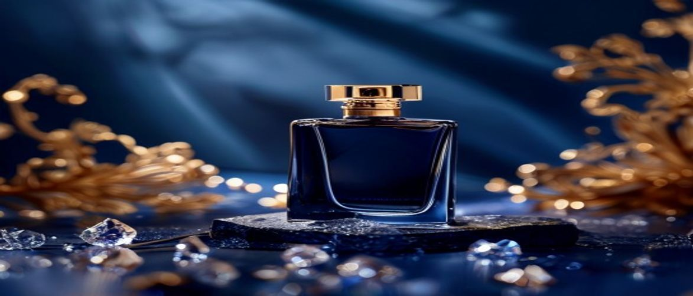

Haute Parfumerie Review
Are you searching for the perfect addition to your luxury fragrance collection and wondering exactly where to buy House of Sillage perfume? Navigating the exclusive world of haute parfumerie can be a delightful journey, especially when seeking a brand renowned for its exquisite craftsmanship and captivating scents.
House of Sillage stands as a beacon of opulence in the niche perfumery landscape, offering an unparalleled olfactory experience that transcends mere scent. Therefore, understanding the authorized channels for purchase is crucial to ensure authenticity and the full luxury experience you deserve.
When you decide where to buy House of Sillage perfume, you are investing in more than just a fragrance; you are acquiring a piece of art. This brand is celebrated for its commitment to unparalleled quality, from the rare ingredients sourced globally to the meticulous design of each bottle. Each flacon, often adorned with hand-placed Swarovski crystals and intricate enamel work, is a collectible masterpiece, reflecting the precious liquid it contains.
The perfumes themselves are renowned for their exceptional sillage and longevity, ensuring your chosen scent leaves a lasting impression throughout the day. Furthermore, House of Sillage prides itself on crafting unique olfactory profiles that stand apart from mainstream offerings, providing a truly distinctive signature scent for the discerning individual.
House of Sillage perfumes are specifically designed for individuals who appreciate the finer things in life and seek an exclusive luxury fragrance experience. If you are a connoisseur of high-end goods, value artistic expression in every detail, and desire a signature scent that embodies sophistication and uniqueness, then these fragrances are crafted for you. They cater to those who view perfume not just as an accessory, but as an extension of their personal brand and a statement of refined taste.
The artistry behind House of Sillage fragrances lies in their meticulously balanced fragrance notes and the masterful blend that creates their signature olfactory profile. Each scent is a narrative, unfolding gracefully on the skin, revealing layers of exquisite ingredients. This dedication to haute parfumerie ensures a truly exceptional scent throw and dry down experience.
| Ingredient / Feature | Scent Role |
|---|---|
| Rose de Mai Absolute | Provides a rich, honeyed, and intensely floral heart note, embodying classic elegance and romance. |
| Agarwood (Oud) | Offers a deep, resinous, woody, and slightly animalic base note, adding complexity, warmth, and exceptional longevity. |
| Vanilla Bourbon | Introduces a creamy, sweet, and comforting gourmand facet, enhancing the overall warmth and richness of the composition. |
| Sandalwood Mysore | Contributes a smooth, milky, and woody base, providing a creamy texture and sophisticated foundation to the fragrance. |
Rose de Mai, or Centifolia rose, is revered in perfumery for its exquisite, multifaceted aroma that is both sweet and subtly spicy. It forms a luxurious heart note, providing a classic floral opulence that is undeniably feminine and deeply romantic. This particular rose variety lends a natural, vibrant freshness that is distinct from other rose essences.
True Rose de Mai, harvested only in Grasse, France, for a few weeks each May, requires approximately 10,000 roses to produce just 5ml of essential oil, making it one of the most precious raw materials in haute parfumerie.
Agarwood, commonly known as Oud, is a highly prized resinous wood that delivers an incredibly rich, complex, and long-lasting base note. Its scent profile ranges from smoky and woody to sweet and animalic, adding an unparalleled depth and exotic allure to any fragrance. Oud contributes significantly to the overall sillage and luxurious feel of a perfume, anchoring the lighter notes with its profound presence.
To fully appreciate the magnificent sillage and longevity of your House of Sillage perfume, proper application is key. A thoughtful approach ensures the fragrance develops beautifully on your skin and lasts throughout the day, allowing you to enjoy its intricate layers.
Many common habits can inadvertently diminish the performance and beauty of your luxury perfume. Over-spraying, for instance, can overwhelm rather than enchant, leading to a cloying effect that detracts from the sophisticated blend. Furthermore, applying perfume to dirty or heavily scented skin can mix with other odors, distorting the intended aroma and compromising its delicate balance.
Always perform a patch test on a small area of skin if you have known sensitivities to fragrances or new products to ensure no adverse reactions occur.
Investing in a luxury fragrance like those from House of Sillage is a significant decision, offering both distinct advantages and considerations. The global luxury fragrance market is projected to reach over $30 billion by 2027, driven by consumer demand for unique, high-quality, and exclusive olfactory experiences, a segment House of Sillage expertly caters to.
House of Sillage perfumes are unique due to their blend of rare, high-quality ingredients, distinctive olfactory profiles, and their iconic, often crystal-adorned, collectible bottle designs. Each fragrance is crafted to tell a story and provide an unparalleled luxury experience, distinguishing them in the competitive niche perfumery market.
Given their high concentration as eau de parfum, House of Sillage fragrances are designed for exceptional longevity. High-concentration eau de parfum formulations, typical of House of Sillage, contain 15-20% pure perfume oil, enabling them to often last 8-10 hours or more on the skin, significantly longer than eau de toilettes.
Authentic House of Sillage perfumes are rarely, if ever, found at discount retailers. The brand maintains its exclusivity through authorized luxury boutiques, high-end department stores, and its official website. If you're wondering where to buy House of Sillage perfume, always prioritize these trusted channels to avoid counterfeits.
Yes, House of Sillage is definitively considered a niche perfumery brand. It focuses on creating unique, artistic, and often limited-edition fragrances for a discerning clientele, distinguishing itself from mass-market perfume brands through its exclusive distribution and emphasis on haute parfumerie craftsmanship.
For the discerning individual who values unparalleled luxury, artistic craftsmanship, and a truly unique olfactory journey, House of Sillage perfume is undeniably worth the investment. Each bottle is a testament to haute parfumerie, offering not just a scent but an entire experience, from the exquisite design to the long-lasting, complex fragrance notes. If you're seeking where to buy House of Sillage perfume, know that you're choosing a brand synonymous with elegance and exclusivity.
Elevate your personal fragrance collection and immerse yourself in the world of true luxury today.
Have questions or a comment on the post? Send us a message and we will get back to you soon.